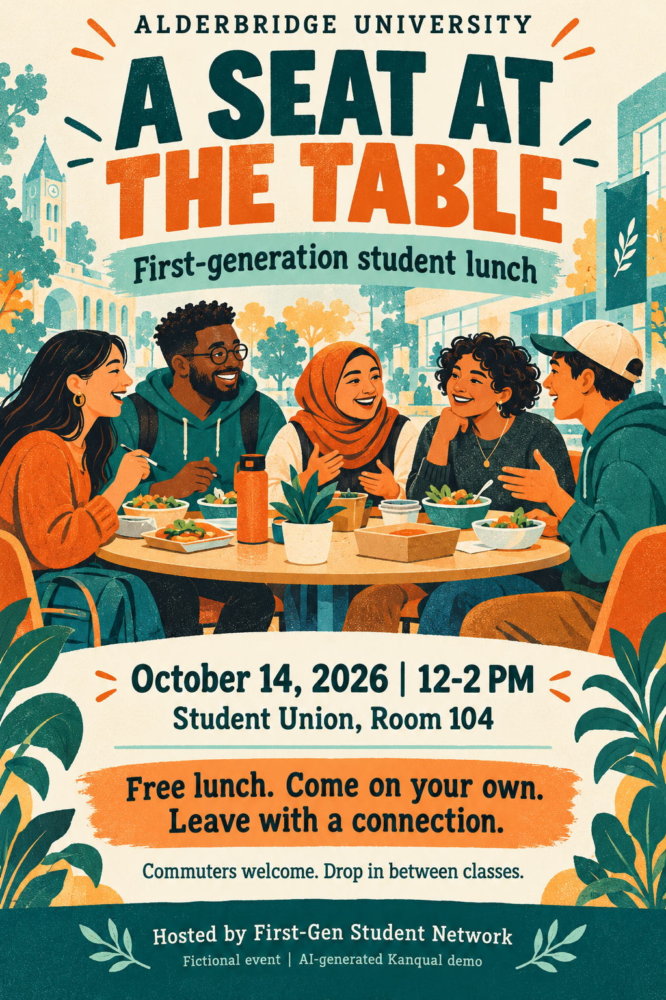
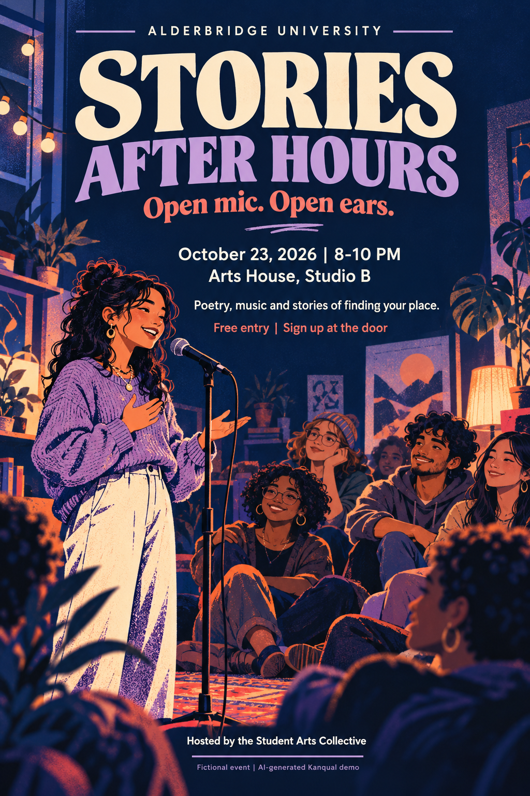
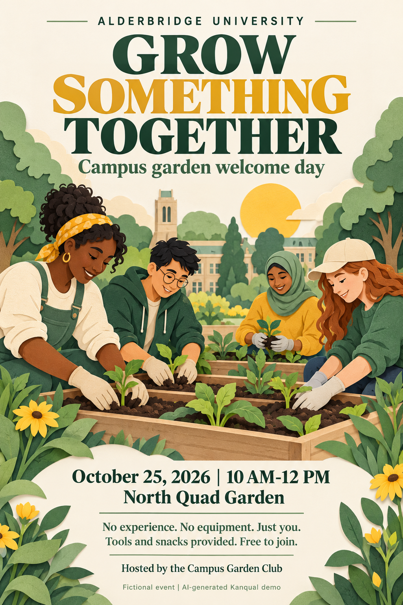

PNG
A Seat at the Table
First-generation lunch: a low-pressure invitation to connect.
KANQUAL / SAMPLE COLLECTION 01
Nine media sources from fictional Alderbridge University. Explore how invitations, student experiences and institutional messages tell different stories about campus belonging.
Fictional, AI-generated demonstration data. The student voices are synthesized. The promotion uses illustrated motion graphics. These are not real interviews, events or university claims.

PNG
First-generation lunch: a low-pressure invitation to connect.


A formal networking event with a ticket price and dress expectations.
A listening session that invites students to shape campus life.
MP3 / 2:16
A fictional student describes growing peer connection and financial barriers.
MP3 / 2:30
A fictional commuter describes work, transport and small moments of inclusion.
MP4 / 1:04
An optimistic fictional institutional promotion for comparison with student accounts.